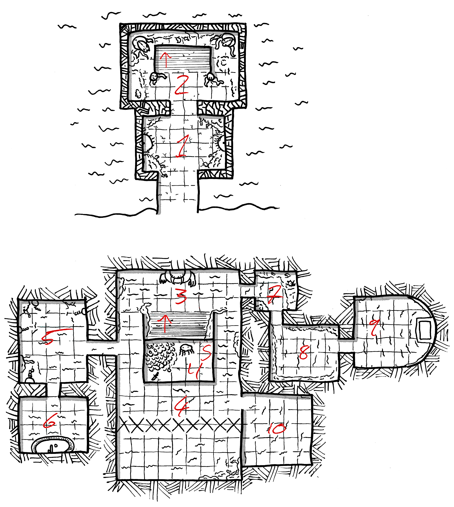

Maps by Roz Leahy
All on the island speak Noos - the coastal people remaining deliberately ignorant of barbarian tongues.
Those within temples also speak and write Aklashian, unknown beyond Noos.
The Noos Sickle is made of bronze. It is treated as a Short Sword which, wield by those trained, ignores Shields.
Noos Maille is made of black lacquered leather scales.
All Noos warriors carry clubs in addition to other weapons. They will try and capture enemies alive, although will protect themselves first. Those captured are bound and transported to Muru.
The Noos Galleys sit low in the water, hiding a long ram beneath the water. These ships do not take damage when performing a ram, and inflict an extra dice of damage.
Roll 1d8 at commencement of play. After this, roll 1d6, and:
- If the previous days score was 2 or less, -2 to the dice roll. - If the previous days score was 5 or more, +2 to the dice roll.
| # | Weather |
|---|---|
| -1 | Very Hot. |
| 0-2 | Hot. |
| 3 | Warm. |
| 4 | Overcast. |
| 5 | Fog. |
| 6 | Light Rain. |
| 7 | Heavy rain. |
| 8+ | Storm. |
Every 12 hours, an Encounter roll should be made. Use the location, reaction and surprise to determine goals as needed - most do not wander aimlessly.
| d100 | Encounter |
|---|---|
| 1-10 | 2d20 Noos warriors, travelling between settlements. |
| 11-16 | 1 Priest and 4d6 Noos warriors. |
| 17-20 | 2d6 Kobolds |
| 21-24 | Herd of deer, 2-in-6 stalked by 3d6 hungry wolves. |
| 25-35 | [If within 4 hexes of 42.13] 2d6 Ghouls |
| 36-45 | [If within 2 hexes of 36.14] 1 Basilisk |
| 46-55 | [If within 4 hexes of 32.15] 2d6 Centaurs |
| 56-65 | [If within 3 hexes of 35.17] 2d12 Skeletons |
| 66-75 | [If within 3 hexes of 45.18] 2d20 Kobolds |
| 76-95 | [If within 3 hexes of 40.20 ]3d6 Warriors of Berith, Beleth and Bifronze |
| 96+ | [If night] Yisharu |
Upon the beach, set back from the high-tide line, a crumbled structure of fire-blackened stone still warm to the touch despite the centuries that have passed. The stones are huge slabs, unmarked by tool nor design yet pleasingly rounded as if a small pebble. Within lair 4 Salamanders amidst scorched bones and ruined coins.
A tower of unmarked stone holds 21 warriors of Noos, their chests armoured in the bronze-dish armour of their people. They carry shields, javelins and cruel sickles, also in bronze. Nashuja (3HD, Medium & Shield, Javelin, Noos Sickle), their leader, has the heads of nine Norsefolk on her belt. They watch the sea against raids - although prior failures discourage such efforts.
21 Armoured Footmen
97 dwell upon the coast within the basket-like houses of Jamidare, woven from the hardy reeds imported so long ago. Their light craft, nearly indistinguishable from their homes, are stocked with the tools of their craft - whaling. All the metal fixtures are of bronze.
Kitane (3HD, Shield, Javelin, Short Sword) became headwoman when she slew a sea-monster in defence of a captured whale. She loathes outsiders, and attacks at the slightest provocation.
30 skirmishers plus 4 fishing boats.

A moss-bearded structure emerges from the river-bend, seemingly constructed beneath the waters and permanently submerged. Beneath the vegetation, stone unbitten by tools shows no signs of wear despite the river’s passage.
1
Dense sodden vegetation betrays no animal nests - the interior free of any such lodgers. The eastern and western walls have small basins of stone, each vomiting long tendrils of plant matter. Each basin holds water - a small brass tube cunningly hidden within the wall once gurgled water pumped from the river.
2
A wide set of stairs fill the floor of this chamber. Emerging from the ghostly plants, pale with light-starvation, are carven figures of aquatic aspect, eyes piscine, bedecked with tentacles and selectively polished to imply a slimy texture.
From below, the sound of water lapping against stone and echoing can be heard.
Rooms below here are flooded up to the knees - movement is halved, and strikes are at -3 to hit.
3
Stairs slippery with half-rotted river weeds lead to a wall untouched by plants. From the stone emerges the torso of a statue. A huge belly gives way to a pair of three-fingered arms, a tusked head with six eyes and no nose, the mouth open wide. Behind the figure, scenes of supplication are rendered in the stone, showing the faintest remnants of paint. All are executed with incredible skill, as if the stone were shaped as clay. Water laps against the stone, cold enough to chatter teeth.
Within the mouth of the statue, delicate human bones, carbonisation and a scorched ring. Those with knowledge of anatomy recognise them as the bones of a hand. A tiny tube of brass glitters at the back of the stone throat.Any putting their entire hand within the mouth awaken the statue, who bites off the hand and deals 1d6+1 damage. Flames dance behind the locked teeth, incinerating the hand before the mouth opens and the statue is still once more. Cleaned up, the ring is revealed to be made of glass talons. (Unnamed,&T)
4
This chamber is divided in two by a floor-to-ceiling mesh of gold wire. Stirring up the water in the southern half, a creature paces. Something like a bull, bedecked in armour-plates of stone carven with waves and stars. If no sacrifice was made to the stone-god in 3, it charges trespassers, the gold wire tearing around it and running from the horns in streamers.
HD 7 / AC as Full Length Maille/ Damage 2d6 / If a character forgoes their attack, they may make a Dodge Save to avoid it’s charge - it continues for 2d6’, and if running into a wall takes damage equal to the amount of distance left untravelled.
5
Between the creeping plants hang chains green with the bronze-disease, each terminating in a manacle wide enough for a human neck. Just above the waterline, scratches in the otherwise smooth, rounded stone.
6
Rising from the water, a basin of stone inlaid with coloured tile forming a mosaic depicting the floor of an ocean, filled with aquatic creatures. A tube of glittering brass emerges from the base of the basin, curving in an elegant swans-neck. Beside this, a small hole in the floor of the assemblage. A nodule on the tube can be rotated - doing so releasing a gout of blackened sludge from the tube. Touched, this sludge stains the skin a lurid purple. Any so stained are marked for sacrifice - the people of Noos will attempt to capture them if the purple area is seen.
7
Climbing from the waterline, pale vines heavy with cream flowers make this chamber feel even smaller. The sweet, musky smell of the flowers is thick on the air - those lingering here must make a Physique save to avoid becoming drowsy, taking -3 on all rolls. Those continuing their stay past this point fall asleep, most likely drowning in their drugged stupor.
8
A single figure stands in this chamber, wearing Heavy armour of bronze scales and a helm resembling the jaws of a fish closing over their face - the full set worth 500sp. Within the armour the figure has translucent flesh and strange organs. They wield a Two-Handed Axe of stone inlaid with mother-of-pearl patterns, worth 350sp. The walls are covered in shields of wood-and-hide and thin spears topped with heads of glass. The figure may only be harmed by the spears upon the walls. They guard the entrance to 9.
HD 5 / AC as Full Length Maille / Damage 1d6+1
9
The eastern edge of this chamber bears a relief of a walled city upon a coastline, the inhabitants welcoming large figures wading in from the sea bearing nets. Within these nets appear to be animals of the land, faces miserable and limbs sticking out between the mesh. Beneath the sculpture, just above the waterline, a square plinth of lead atop a pillar of stone. If a land animal is sacrificed upon this plinth, the secret door to 11 appears, allowing access.
10
The walls are all painted and show minimal water damage. The northern wall depicts scenes of humans being chased, captured, dismembered and eaten by blue-furred humanoids, faces leering huge. The western wall shows glittering insects of bronze dispatching the humanoids and liberating the humans. The southern wall depicts the humans dwelling in a huge coastal city of stone, the bronze insects watching from afar. The eastern wall, rendered in a different style, depicts a huge black wave consuming the city.
11
Within this heretofore sealed chamber, an ancient hoard (Temple II):
A flat, wide stone juts from the side of a hill and creates a deep hollow. The top of the stone is stained with old gore and splinters of bone. Within dwell three deathless Sphinx, their eyes locked forward lest they scrape against their sand-skin. They have composed an epic detailing the fall of their home in a language known only to them. Any who interfere their recitation are picked up and dropped atop the rock.
A hot spring is hidden beneath a thicket of trees growing in the valley between two rock-clad hills. The water is hot enough to bathe in.
The hills surrounding Ika support huge herds of wiry, thin-coated sheep tended to by the 45 of the village. Each of their woven homes has a basement filled with cheeses and wicker hives of honeybees. They make use of no dogs. All adults have long scars upon their faces - inflicted by the Sheep-Killer in 40.13. Once a month, one takes an offering to 40.13 in exchange for the safety of their herd.
Kikeru (2HD, Sling, Javelin, Spear) will, with gestures, offer all 40 of their cheeses for the slaying of the Sheep-Killer. Their tongue is a knotted ball of ruined flesh, the tip of an iron spike still embedded within it.
15 skirmishers.
Upon the coast, a single tower carved from a single huge pillar of stone has several wooden and wicker extensions sprouting from it. Within are 140 Noosfolk warriors, wearing fish-leather jerkins, and large coiled shells as helms. They wield shields, javelins and Noos sickles. All watch the sea hopefully.
They are led by Itaja (3HD, Medium, Noos Sickle, Bow), who hates all outsiders with a religious fervour. Within a chest of lead, she keeps the head of a statue stolen from a temple on Rhus under cover of night.
140 Footmen plus 2 Small Noos Galleys.
Atop a hill, a huge sea-shell clamped shut - large enough to contain a horse. The surface is rough and weather-worn, but still hard enough to repel blows. A solid, translucent substance glues the two halves shut on the lips of the shell. Using a wedge, the shell could be pried open from the hinge. Within are the bones of a 9’ humanoid with an elongated skull. It wears a sheet of glimmering red-blue-purple material, paper-thin but warm and waterproof, worth 4000sp. There is enough to make 3 human-sized cloaks. Within this wondrous garment is a vial of the Blood of Command (Human) (&T). Beside the bones is a warhammer, the soapstone head shaped like a crab-claw - worth 750sp.
If this tomb is robbed and the inhabitants discover it, all will begin hunting the defilers.
Thorned vines coil amongst a proliferation of stinging leaves - a wall of unseemly plants surrounding the stones which still stand, obscured from casual observers.
There are 15 stones, upright. The stones are 15’ tall, 8’ wide and cylindrical, bored with many niches. Within the niches, small figures made of pottery enact scenes - hunting with bows, living in pyramidal homes. Between these niches, a spiral of bore-holes. Atop each is a larger bore-hole, filled with bones.
Lairing within the gnawed-out roots of a tree, a Manticore observes its kingdom, marking the boundaries with its iron spikes. Those not bearing facial wounds are recognised as threats, and harassed from afar with flung spikes. The Manticore needs no sleep, but will forget caution if offered the flesh of a sheep.
16 ghouls of Norse origin make their fireless camp here, wearing rotting leather armour. They are starving, not expecting collection by the Corpse-Ship for 2 weeks. At night they move, seeking meat, leaving 2d6 of their number to guard the camp - higher numbers indicating more stored meat.
When the tide is high, a brave pilot could angle their ship into a sea-cave upon the coast. Those attempting the climb during lower tides have found the rocks below sharp and hungry for blood.
Within this cave, emerging from the stone, an immense skull of some antediluvian beast, a wall of dun bone sloped like the moon. Before it, a dead fire, the ashes long cold. At night, if lit by a fire, it speaks of the world that was, and lectures on old powers in a language all understand but could never speak. The skull does not respond to questions, but continues to speak.
Those spending a week here learn the workings of a random spell, but secretly lose 1HP. After losing 3HP, the wasting is obvious. This cannot be reversed.
Beside the river the 66 of Qeka dwell, each bound to the flowing waters. They haul up great quantities of fish and shellfish, smoking them and carrying them to Patada. All their fishery is done from the shore or half-submerged in the waters - they abhor boats.
Pitaja (2HD, Shield, Sling, Dagger) remembers fondly their time spent in Patada, and considers their stewardship of Qeka a great honour.
15 skirmishers.
The source of the river is a huge lake, waters placid and deep. Standing in the lake is Tholl, a Juggernaut. A pair of massive stone legs, jagged with stairs lead to a triangular body with long, silken fur. Armour of stone plates, carved with matching geometric patterns, covers much of this body. A wide, oval head is hidden beneath a featureless helmet, a pair holes bored for dull orange eyes. Four arms sprout, three-fingered and large enough to pick up houses.
Tholl is awoken by any entering the waters, and pursues them out to the sea.
Upon its back, birds nest and drink the fluid that flows through Tholl’s flesh, their beaks long and sharp.
Beneath the helm is raw exposed flesh made of coiling vermicular matter. Vulnerable to normal weapons, if 36+ damage is dealt here, Tholl dies, falling to the earth finally.
On the outskirts, a few grey leaves litter the floor. Inspection reveals them to be delicate stone, crumbling to nothing beneath the lightest touch. Then branches, trees, deer, foxes, mineral and inert. Between the trees, a Basilisk slinks. Around its reptilian neck a thick band of platinum set with flowing designs flowing around inset pearls (worth 2500sp).
It has grown wary of hunters, and uses stealth to avoid mirrors.
A tree, struck by lightning, has silver-grey mushrooms coating the burnt wood. Eaten, they cause vomiting and powerful hallucinations, living objects giving off fields of golden light. These visions last for 8 hours and give +2 to Warding saves for the duration.
Paths have been cut into the earth here, all converging on the widest point of the river. A pair of stone pillars, set with manacles, stand 2’ apart. In the silt of the waters awaits Kovatos, brought here by devotees in ages forgotten. In form, it is something like a huge rugose jellyfish, tendrils thickened and ending in grasping claws the size of swords. Hanging from these four-dozen tentacles are many heavy gold charms, built with fitted hoops for just such a purpose. Those approaching without an offering of 4 gold charms or a human sacrifice rouse its ire - Kovatos rises from the depths with a shrilling keen.
If a sacrifice is given, Kovatos offers up a tendril, allowing the claw to be cut off. The dactyl of the claw can be used as a sword which adds +1 to hit and to damage.
If slain, there are 921 golden charms, every 10 taking up 1 inventory slot. They are worth 200sp each.
HD 10* / AC as Leather / Damage 1d6+1 / May shriek once every 4 rounds - those in earshot must make a Physique save or have their eardrums burst, deafened for 2 months and incapacitated for d6 rounds. / Makes 3 attacks against all targets in reach per round.
* Supernatural HP
Eight wild eyed horses, manes shaggy, watch from beneath the wind-bowed trees. They are liable to snap at those approaching without food. Tamed, they do not shy from the supernatural.
At the bottom of the river rests a long boat of woven basketry, visible when the waters run clear. It is weighed down by grave-goods of gold, surround a woven sarcophagus with the appearance of a chrysalis. Within this is a Mummy, embalmed in seaweed, their teeth replaced with alternating gold-and-pearls. If their tomb-ship is disturbed, they awaken, using their strength to hold would-be-thieves beneath the waters.
The grave-goods (Tomb III):
Atop a wooden pillar, a shrivelled old woman balances. Her garments are heavy with lead spheres. As the weather changes, so she too shifts position, arms and legs held taut. To those approaching respectfully, she offers four lead orbs - if thrown into the sea, she explains in a faraway voice, it can help soothe or rouse the winds, depending on the whim of the thrower. She speaks perfect, unaccented Norse. Those approaching disrespectfully, she ignores.
If thrown into the water, the orbs work - adding or subtracting 2 from the Wind strength roll for the next day.
If visited again, she is gone, as is her wooden pillar.
Upon the beach stand six Merfolk, armed with slender spears and shell-shields, guarding another of their number, form swelled with eggs and prophecy. The central figure quakes and moans, voice close to human. They vomit their eggs and take a reading - what they seek lies in the fort to the North. If approached, the Merfolk ask in half-forgotten Norse and Albann for the return of an idol from the fort, promising payment in pale gold.
They payment is months later, and consists of a chest of pale gold tokens worth 10000sp. The Merfolk will find and deliver it to the party directly.
3 Centaurs, armed with bows of horn carved from a beast long dead, dwell amongst a herd of 40 horses. The horses do as the centaurs command, stampeding threats to death. The centaurs despise humans.
Their bows require a Strength of 15 but are treated as Heavy weapons.
Low sloped buildings of wood and earth house the 75 of Qitune. They are quiet and serious, tending to their traps in the river and undergrowth. Small animals are strung up everywhere, some drying whilst others almost seem to act as warnings. All adults carry short spears.
Rusa (4HD, Spear, Dagger) is a huge figure, covered in scars from weapons and claws alike. If any visitors tarry, he will challenge them to duel in the centre of the village. He wields a spear and knife simultaneously, adding +2 to strike. If reduced to 3 HP or less and spared his life, he will teach this unique style of fighting.
10 footmen, 15 skirmishers.
Woven homes shelter beneath the foliage above. 67 live here, tending to fruit trees planted long ago. Short-furred dogs watch sleepily from the hollows they have dug in the roots of trees.
Ariad (2HD, Shield, Javelin, Noos Sickle) tries to organise a band to seek her brother who went North to pray at the Tomb-Shell. None are interested, knowing the risks of travel through the forest.
15 skirmishers.
In the gloom of the deep forest, 28 tend their fungus-laden trenches, retiring to their burrow-like homes. All are ageing, childless, backs bent with their toil. Beneath the forest grime, their garments are rich and of the highest quality - the mushrooms they grow are medicinal, and can heal the mind and body.
Those eating the mushrooms of Sama heal at twice the normal rate. A tea brewed from them grants a second Warding save against mind-clouding magics. The dwellers of Sama trade them for items worth 100sp each.
The 28 of Wadunimi spend as much time in the river as they do in their homes, digging up clay. Surrounding the houses are the kilns used to fire their pottery - all sculpted with a keen eye for symmetry and bereft of decorative elements.
Jadikira (3HD, Leather, Javelin, Noos Sickle) watches the waters and the trees. Useless at pottery, he instead is fiercely defensive of his fellow villagers.
3 footmen, 5 skirmishers.
The stone, square buildings of Iruja stand empty. A small remaining population dwell in the centre, watching the empty houses for thieves with their huge, vicious dogs. A stockpile of food and drink sustains them. They do not know how long their vigil must be maintained for.
Within the houses, many personal belongings have been left - although few are valuable.
22 footmen plus 20 guard-dogs.
Upon the coast, the 65 dwellers of Teri build the low-slung galleys of Noos. Their children play in the skeletal hulls of half-finished warships. Huge quantities of wood are floated down river and hauled by oxen to the village.
Yisharu (1HD, Bow) once sailed to defend Noos, and learnt respect for those beyond the isle. He speaks a few words of Norse and is eager to practice them.
10 footmen, 10 skirmishers.
At the centre of the village, five young men are tied to a post, small rocks and shells thrown at them occasionally. They were caught stealing from the fishing nets, and are being held - all know they come from Meza. All 47 of Sikira partake in the generations-long feud between the villages.
Pijaseme (2HD, Shield, Noos Sickle) would see the village pay outsiders to steal the goats of Meza, driving them into the forest to the East. They offer 500sp in corded silver jewellery for such a feat, but insist that no-one is killed.
7 footmen, 7 skirmishers.
In the arid earth, the square-stone buildings of Meza cluster. Silky-furred goats wander between the houses whilst the 32 inhabitants fret about their missing sons. All know they went to Sikira to pilfer food - but to get caught? Unthinkable. Such a failure puts Meza on the back-foot in the long-standing feud.
Pijasiros (2HD, Shield, Noos Sickle) speaks for all when he offers 700sp in golden bangles for the safe return of the five men - as long as no-one is killed.
3 footmen, 9 skirmishers.
Atop a boulder sits a woman, wearing a heavy war-mask depicting a beaked squid, medium armour made of overlapping bronze scales and weilding a Noos Sickle. Didikane (2HD) wishes to see the world beyond Noos - she has learnt Norse secretly, and awaits some way off the island.
An off-red clay brick, broken in half, contains a rod of gold, worth 100sp.
Between the trees, small pyramids of clay-brick stand amongst their collapsed siblings. Most are no larger than 10’ square, vegetation crawling over their surfaces, their peaks 12’ in the air. Open doorways allow access to the interiors - most now home wildlife, their nests filling the enclosed space, hiding old firepits.
Hundreds cluster - closer the centre, they increase in size and ruination, some showing signs of burning long ago. Presences still lurk in these despoiled homes - denied the sun, they wait in the deep shadows until night lets them creep forth and devour the living.It has been centuries since they saw humans not descended from the invaders of so long ago.
All of these buildings have been emptied of their contents long ago. A single, smaller pyramid towards the centre is made of red bricks, the top brick missing. 121 bricks were used in its construction, and the top 60 contain a rod of gold worth 100sp.
The spectral inhabitants consist of families of 2d6 Wraiths, the lower d6 of which are armed with bows.
Daqera burns with a strange, unearthly flame. Burnt and broken bodies are scattered, the earth torn apart as if by some divine plough. Amongst the devastation, a single survivor bears a horrible burn across their chest, their hip crushed by a great weight or blow. He gestures to the South as he expires.
Searching the few unburnt buildings, 10 days of fresh food can be found.
Fish teem in obscene numbers here, the sheer mass of bodies slowing the river noticeably. Beneath the squirming ball of piscine bodies, a bronze charm depicts a large, happy fish. Thrown into a river, it attracts huge numbers of fish. Thrown into the sea, and it attracts a Sea Monster.
Bricks of mud and clay make up the boxy low buildings which cluster around the round towers seemingly made of single massive slabs of smooth stone. Between them wind streets dusty, 1987 calling the city of Muru home. All of the city surrounds the Palace-Temple Complex, built to surround the water that falls from the river down to the sea below. Up carved paths sailors come and go, the calm bay below hosting many of the Noos Galleys. Much of the wealth they plunder or trade for is in gold, delivered to the whitesmiths for sacrifice to Kovatos. Such sacrifices occur four times a year.
Within the Palace-Temple are 150 tall sarcophagi, each with a stone basin set before them. The sarcophagi are banded with gold and bronze, intricately constructed and lovingly maintained. The basins are stained red with the blood of sacrifices. Within each sarcophagi are the bones of a 9’ humanoid with an elongated skull. Each receives sacrifice once a month. Those providing sacrifices are honoured by the priesthood, who maintain all power on the island despite a lack of presence. The temple is guarded by 150 picked 3HD warriors, each wielding swords made from Kovatos’ claws (+1 to hit, +1 damage) and shields of crab-shell. These warriors have bands of gold around their heads, causing skull deformation in mimicry of those within the sarcophagi.
Those captured for sacrifice may be given an alternative sentence - defeating the Kobolds that plague the river. Such hopefuls are accompanied by their number in Head-Bound Warriors, under orders to kill any shirking their duty.
150 Head-Bound Warriors, 100 armoured footmen, 200 skirmishers plus 8 Small Noos Galleys
Cleared woodlands give way to fields of wheat, the clay-brick buildings of Amidao huddled together as if afraid of their crop. 68 live amongst them, tilling the earth and watching the seasons.
Kikeru (1HD, Sling) bears scarring on his throat. Despite his throat being slit in ritual sacrifice in Muru, he survived. The priests decided to let him live, his blood given to the ancients.
12 skirmishers.
A ruined boat of Pyorran make lies upon the bank. Beneath it, conserving their energy, is Ermelandus (2HD, Maille, Scimitar, Wicker Shield, Javelin). He speaks Norse, Pyorran, Arabic and Istvaeonic. His armour and weapons are from South Pyorra, but he hails from the Christian court of King Roderik. In a hidden pouch, he carries 137 Doubleface Drachm.
He offers to join the party as an experienced traveller in return for any found silver coins with a pair of faces on one side. If he discovers the party already have more than 100 Doubleface Drachm , he will attempt to steal them. If he comes to trust the party, he inducts them into the secret of the coins and offers to work jointly to amass the coins and discover their secrets.
A single Ennt, alone in the plain, watches the land sadly, waiting for the sea to retreat once more that it might walk to Albann. This long wait has turned it bitter - those camping beneath its spread branches rouse ire long unexercised.
A single Golem of imported stone and clay, shaped like a shackled bull, watches the ocean. It is far bigger than a real bull, 10’ at the shoulder. When ships are spotted, it begins to pace, scratching at the sand. Those approaching from behind always have Surprise.
Skittish venomous snakes, coloured black and red, dart between the rocks on this beach. Many suffer from malformed fangs, unable to bite.
A small lake - verging on a large pond - has a small hut of stone at the centre. Fire flickers in this hut, day and night. Within are the bones of a long dead man, watched over by a Fire Elemental, unable to leave for fear of being extinguished by the water or burning down a boat used to transport them. They pledge 50 years of service to any who can free them from their island-prison, although such a pledge is only words - nothing magically compels them to honour it.
12 Skeletons, yellow of bone and carrying bows spared the march of years, hunt through the forest here. An unremarkable patch of earth is filled with the animals and people they have killed - one who dug beneath them would find the remains of stone pyramids and other bones, burnt and denied rest.
Within the woods, there is a swath which is silent, untouched by animals. The smell of the sea intensifies here, wafting from a partially hidden cave entrance beneath a dying tree. The wet soil before the entrance bears heavy footprints with long, finger-like toes tipped in what appear to be talons.
Inside, the cave in a single long, coiling passage leading down and towards the cliffs that face the sea. At the mid-point, where the darkness is thickest, the wall has been deeply gouged with pictograms unused for centuries. The gnawed bones of fish and beast are stacked in low, neat piles - moving through the area without knocking one over and causing a sound is difficult.
There is a 70% the creature that lairs here is currently sleeping in a niche carved into the ceiling. If not, it is out and will return in 1d6 Turns, smelling the stink of invaders and approaching cautiously.
It would stand 10’ tall if ever it stood straight - instead, it clambers on all fours despite its humanoid features. The skin is toadlike and blueish, the eyes huge and the skull elongated out backwards. Small, triangular teeth fill a lipless mouth, and each finger bears a golden ring with a false-claw projecting outwards. These rings have intricate flowing patterns dancing across their surfaces. It only makes guttural sounds unless spoken to in Aklashian, at which point it flees to the ocean.
HD 9 // AC as Maille+Shield // Damage 1d6+1 // Once every four Rounds, it may fire a coruscating beam of energy from its left eye, sweeping over 1d6 victims who take 2d6 damage unless they make a Dodge save. This beam tears through conventional matter and burns wood with a strange pale flame. This energy is reflected by Silver.
There are 24 rings, each worth 200sp. If five are worn, the wearer may rake with the claws - always bearing a Medium weapon.
The 60 of Inamdi wound the forest. Every day, they take up their axes and continue to carve a swath through the trees, dragging the logs to the river and floating them down to Teri. Many are marked for death, the back-breaking labour offered as an alternative to sacrifice. The freshest amongst them would throw off their shackles and escape Noos.
Bansabira (1HD, Unarmoured, Staff) watches the captive labourers closely. A single mistake is all she needs to reclaim them as sacrifices for the temple.
14 footmen.
At the bottom of the river rest seven heavy stone jars with only a small amount of silt built up around them. Each jar is coated with a highly sticky waterproof substance which binds to flesh, weighing down any touching the jar.
In the trees watch seven Kobolds with long, light spears tipped with stone. They emerge if any touches their jars, pricking the victim with the spears. Once dead, they drag the corpse to 45.18 to feed their kin.
Between the trees runs a cat, watching any visitors. Whilst skittish, if fed, it bonds with and accompanies whoever feeds it.
The hills near the beach are marred by the ruins of a fortified camp, the stone elements shielding the burnt wood. Beneath the thin topsoil are shields, swords, armour and bones. Iron pots, corroded by the years but still surrounded by square, stone-brick buildings. Hidden in corners and beneath piles of detritus are coinpurses. Within are heavy electrum coins bearing Latin text reading ‘EMPEROR AXGOSTUS’ and marked with an eagle crushing a snake in its talons. Every hour spent searching yields d100 of these coins, each worth 10sp. After 100+ have been found, the camp is exhausted. If these coins are used on Noos, the party is marked for death.
At the centre of the camp, a heavy standard still stands, a wooden bull and a wolf forming the crest. If this standard is disturbed, 62 Skeletons claw their way up from the earth, wearing the equivalent to Maille, wielding Swords and Shields. If the one touching the banner speak to them in Latin, they form an infantry block and await further commands - otherwise they seek to kill the living who awoke them.
A light boat, dragged up on the shore and hidden beneath a sand-coloured sheet. From it extend tracks in the sand, leading to a fireless camp. Ten Istvaeonic warriors, beards long and mail dull, are accompanied by their ten shieldbearers - all beardless and keen to prove themselves. They speak a little Norse, and are willing to pay 100sp in silver pennies for the location of small village. They would be willing to split the loot to assault a larger settlement.
Dense throned undergrowth shrouds an open cavern rent into the ground, 150’ deep. From this gouge in the earth emerges Yisharu, a Giant Bat.
The first story is that Yisharu flies at night so they cannot be seen. That is why he hunts humans, who carry flame to illuminate the night - or so the story goes.
Yisharu is always in his lair during the day, although his hearing is sensitive enough to detect footsteps on the surface.
When hunting, he seeks to strike the weakest and avoid prolonged fights. He is strong enough to pick up a man in Medium or Light armour, dropping them against rocks or in the sea.
HD 5 / AC as Maille/ Damage 1d6+1 / Drains blood, healing HP equal to damage dealt. This may increase their HP past initial total, but any ‘additional’ HP bloats Yisharu, meaning they cannot fly.
A blackened oak stands alone, silvery scars forming a lattice down its trunk. Despite being burnt and riven, small green leaves sprout from the rent tree. Whenever there is a storm, lightning strikes this tree playfully, gently. Anything standing atop the tree is also struck, taking a mere 2d6 damage.
Mossclad buildings of wicker and earth blend into their forested environs, providing shelter for 59 souls who forage and hunt with their tools of bronze. Dogs and cats outnumber their owners.
Widina (3HD, Leather, Noos Sickle, Javelin) is torn. Her son, Duripi, has returned from his worldly wanderings, but has been changed. The people of Panina help her for now, providing her food and supplies to take to 38.19.
5 footmen, 10 skirmishers.
The river emerges from a stone-faced hill, the entrance festooned with spikes topped with the heads of humans the bodies of small animals. The water is shockingly cold and the entrance low, stopped masted boats entering.
Within, a warren of 92 Kobolds, armed with wooden tipped (-1 damage) javelins. The main entrance is always guarded by 16 of their number. The rest patrol their caves in groups of 2d6 or dig in the main shaft, searching for more of their kind - finding 1d6 a week. They have a Basilisk, excavated and trained to open and close its eyes when barked at in their strange language.
At the bottom of the central shaft, accumulated accidentally, their hoard (Monstrous III):
A small circle of stones stand in a forest clearing, highlighting a constellation. One sleeping within the circle awakens after hazy, cosmic dreams with knowledge of Light/Darkness, True Seeing and Wall of Fire. They also know that performing the 1/Day ritual for Light within this stone circle will let the starlight into their skull.
Fifteen Elves make a fireless camp on the plain. They carry branches which they use at clubs. A sixteenth dies of starvation, the rest watching without understanding.
They have no language.
A knife-edge of rock hides just beneath the water at low tide - boats passing through the nearby water have a 3-in-6 chance of holing their hull upon it, beginning to sink.
Fourteen drink and swear and polish their cruel implements in a rough camp upon the coast, their three boats pulled up and stashed in some shrubs. Between the motley crew, they speak Norse, Brythonic and Istvaeonic. They hunt Duripi, a killer and beast who rampaged through the demense of Lord Chlotar. The reward stands at 1000sp for his head, and the band believe Duripi to have returned home to Noos.
They are led by Waltgaud (4HD, Maille, Two-Handed Axe, Sword), a slayer of beasts jealous of success in others. Any challenge to his authority is met with posturing and, eventually, violence.
10 of their number wear leather, carrying shields, clubs and rope. 4 wear chain, two of whom carry shields and longswords, two carrying two-handed axes.
Hidden in the old-growth trees, Duripi is delirious with pain. A Troll, still young, gums still bleeding, still spitting glass and still unable to grasp the world without howling. His mother tries to keep him alive and hidden, but every mouthful is agony - his screams will be heard eventually.
Silence lies thick over Aseja, the remaining 22 bid to hide and watch any visitors. At night, their children run to 40.20 and tell the guards what they have seen. There is nothing behind the eyes of these children - they act as the chain which binds, their souls held captive by Bifronze.
If violence seems likely, all flee to 40.20, banging drums to alert the guards.
8 skirmishers.
A fresh earthen wall, set with spikes, surrounds the now-crowded village of Dirinia, housing 83. A sick, desperate carnival air haunts the settlement - many stumble drunk between houses only recently gifted to them, bearing arms they have yet to use in anger. All here serve Berith, Beleth and Bifronze - those who resisted formed the foundations for the earthworks. Those unhappy from across Noos find themselves here, partying and training for the capture of a third village.
15 footmen, 15 skirmishers.
A sheer cliff-face is skirted by jagged dagger-rocks, their tips only just visible at high tide. Amongst them, visible only from above, is the tangled and punctured body of a Giant Squid, only a few days old. Seagulls flock above, but do not descend - across the body crawl 17 mites the size of terriers, diamond-hard rasps able to tear through armour. Within the Squid, a full ink-sac remains.
HD 1 / AC as Maille/ Damage 1d6 / Attacks treat all armour as Leather.
Upon the shore a heap of broken timbers barely resembling a ship. Once it was huge, carrying livestock and colonists and their secret cargo of idols stolen from rival temples. Only the idols survived, but they refuse to let their captors truly die. Within the wreck stumble 26 Zombies, made of mashed-together humans, cows, sheep and dogs. If felled, they reform over the next 1d6 Turns - only burning could stop this, but all are sodden from the waves.
There are five idols, each smooth-faced humans standing 4’ tall. They are worth 3500sp each to an occultist, but each night they resurrect the nearby dead to stalk the thieves. Their home has long since sunken beneath the waves.
Three names for three crowns, each resting upon one head of a Chimera. It has bid its captives to build it a fort of stone, wherein it lairs and plots the capture of a third village. It is bound to follow the Rule of Threes.
36 footmen guard the fort, wearing Leather armour and wielding bows and Noos sickles. 12 stand upon the walls at any given time, 12 attending to the Chimera whilst the final 12 sleep. The Chimera responds to sounds of violence, emerging from the central structure - a single room, the walls stained and carved with encrypted calculations. Once a week, delegations from Aseja and Dirina arrive to deliver food and news.
The crown Berith, worn by the lion head, grants dominion over men’s bodies - all orders must be followed, although each must be completed before the next is given. A Warding save negates the effect, although the afflicted may try and subvert the orders through cunning.
The crown Beleth, worn by the dragon head, grants dominion over men’s minds - it can hide the real and conjure the imaginary, although all must share the delusion. A Warding save dispels the illusion for that individual - and lets them disprove it to the rest.
The crown Bifronze, worn by the goat head, grants dominion over men’s souls - it can tear the soul from a body and imprison it within itself. Those victimized can still take action, but fail all Saves until their soul is restored. A Warding save resists this effect. Breaking the crown restores all the captured souls.
Each crown can be used once per round in addition to other attacks, depending on which third of the Chimera is manifest.
Each crown is worth 10000sp. Humans may only use them once a week safely - each use thereafter requiring a Physique save to avoid permanently losing 1HD, their body shrivelled and drained.
Amongst a thicket of trees, taller and thicker than the rest, scraped bark, hoof-prints and fragments of horn.
At the centre of the river, a colony of beavers lives. Their lodge contains 14 Doubleface Drachm.
At the base of a tree, a skeleton is held together by layered robes dyed black. Within the skull are 3 Wisdom Teeth (&T), popping out from the jaw, the bone warped around them.
A slender vessel of fantastically light wood has been pulled up on the beach. A small fire burns beside it, and a figure in a large hat warms themselves by it. They speak all the languages of the realm.
They offer their fire to any travellers, before spinning them a tale - they had set out with 19 others to seek an island that moves with the tides, told to contain riches beyond compare. Unlike most, they found this fabled isle - empty cities and beast-haunted forest beneath a mountain forbidding. One by one the companions were picked off until they alone were left standing. They stole a boat from that place, as well as a key to a tomb in the foothills. The figure has buried the key nearby, and will sell the location for 1000sp, as well as a directions to where they last saw the isle. If any take the offer, they take their money and sail to Eastern Pyorra.
At the spot they describe, a heavy key of iron carven with repeating triangular motifs surrounding geometric skulls. If their directions (sail 2 days West beyond Ruislip) are followed that day, the Wandering Isle of Greschott can be found.
A old woman dwells within a sea-battered hut set about with charms and wards. Any visitors find her fluent in Norse, Brythonic and Istvaeonic. She demands they stay and eat her fish stew. To those bearing the awful stew politely she offers a trade - for the blood of Yisharu, she can teach a secret route into and out of the Palace-Temple complex at Muru, leading directly to the inner chambers where their wealth is stored.
12 figures, painted chalk-white and covered in charcoal sigils, squat like dogs around a tent in the Arabic style. Within, Edicia (3HD, Leather, Shortsword) burns the bones of drowned men gathered from the beach, seeking an ancient wreck filled with idols able to raise the dead. She, as do all acolytes of The Deathless, wears a mask of bone extracted from her own skull. She is able to cast Fear and Invisibility once.
Those revealing the location of the wreck in 48.19 are paid 200sp for their efforts. Any delivering the idols to Edicia are given both of her potions. Those unable or refusing to help are attacked if easily overwhelmed.
The painted men have 1* HD, wearing nothing and wielding javelins and short swords.
Within the tent, her accoutrements (Magic User II):
* Supernatural HP